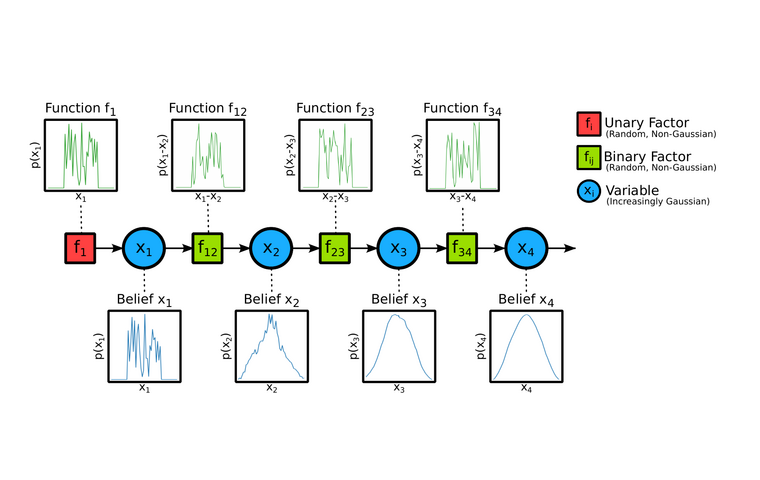

MLP Splatting: Object-Centric Neural Fields
ECCV, 2026 (* equal contribution)
Object-centric neural primitives for photorealistic rendering and interactive scene editing.
I am a second-year PhD student in the Dyson Robotics Lab at Imperial College London, advised by Andrew Davison and Pedro Mediano. I received my BSc from CUHK-Shenzhen, advised by Zhi-Quan Luo, and my MSc from UCL, advised by Dimitrios Kanoulas.
How can robot vision lead to spatial intelligence? I explore this question through distributed inference frameworks and 3D representations.
ECCV, 2026 (* equal contribution)
Object-centric neural primitives for photorealistic rendering and interactive scene editing.

BP → GaussianICML, 2026
A theoretical account of when beliefs become Gaussian in sparse, loopy factor graphs.
ICRA, 2025
Few-shot visual localization using a compact 3D Gaussian Splatting map.
project page / arXiv / code